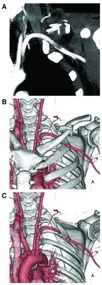
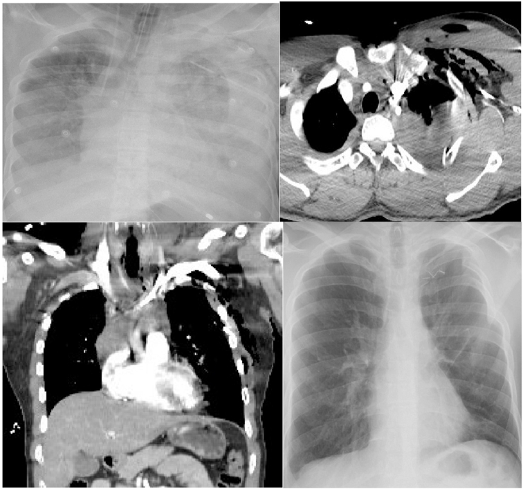
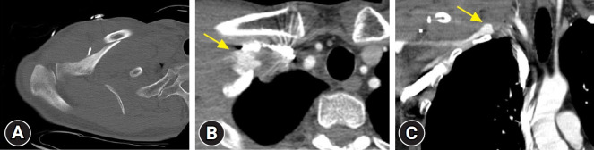

3107 — Đứt – rách động mạch dưới đòn sau chấn thương ngực kín / Traumatic subclavian artery injury
Tags: pattern:mat-mach-chi-tren pattern:gia-phinh-dong-mach pattern:thoat-mach pattern:tran-mau-mang-phoi vung:nguc vung:thanh-nguc protocol:CTA-nguc protocol:DSA protocol:stent-graft score:ATLS score:ISS
Mức chắc chắn (certainty): tổng hợp y văn (literature synthesis) — ghép 5 chuỗi dữ liệu: (a) meta-phân tích 12 nghiên cứu, 2.854 bệnh nhân so sánh can thiệp nội mạch và mổ hở (Tsai SY et al., World J Emerg Surg 2026, PMC13449391, CC BY-NC-ND 4.0); (b) 14 ca tại một trung tâm mạch máu (Tadayon N et al., J Cardiovasc Thorac Res 2020, PMC7321003, CC BY 4.0); (c) 7 ca tại trung tâm chấn thương cấp I, 5 ca đặt stent (Zhang J et al., J Vasc Surg Cases Innov Tech 2022, PMC8743185, CC BY 4.0); (d) ca chấn thương kín đặt stent nitinol (Nakada TA et al., F1000Research 2014, PMC4329670, CC BY 4.0); (e) 2 ca nguyên văn có ảnh (Chaudhry IUH et al., Ann Med Surg 2022, PMC8977998, CC BY 4.0; Kim J & Moon J, J Trauma Inj 2025, PMC12800519, CC BY-NC 4.0). Số nào nguồn không đưa thì ghi "chưa rõ".
Bài này trả lời 4 câu hỏi của ca "chấn thương ngực kín + tay lạnh, mạch yếu": (1) Động mạch dưới đòn bị tổn thương khi nào — và vì sao mạch quay vẫn bắt được? (2) Dấu hiệu "cứng" nào buộc mổ ngay, dấu hiệu "mềm" nào cho phép chụp CTA? (3) Stent-graft phủ có thay được mổ hở — và ai không được đặt stent? (4) Bỏ sót giả phình trên CT đầu tiên gây hậu quả gì? Đây là mặt mạch máu của chấn thương ngực kín; mặt đường thở ở 3083 – Chấn thương khí – phế quản do lực tù, mặt thành ngực ở 080 – Chấn thương ngực, mặt can thiệp mạch chi ở 3095 – Tổn thương động mạch đùi sau can thiệp.
1. Tổng quan bệnh học – cơ chế hình ảnh
1.1 Giải phẫu quyết định cả chẩn đoán lẫn đường mổ
- Động mạch dưới đòn đi từ quai ĐMC → bờ ngoài xương sườn 1, chia 3 đoạn theo cơ bậc thang trước (anterior scalene):
- Đoạn 1 (trước cơ bậc thang): ngực – trung thất, sát đỉnh phổi và màng phổi; tổn thương ở đây gây máu tụ đỉnh phổi / tràn máu màng phổi, đường vào là mở xương ức giữa hoặc mở ngực trước bên.
- Đoạn 2 (sau cơ bậc thang): nằm giữa xương đòn và xương sườn 1 — bị kẹp khi 2 xương này gãy/di lệch; đường vào trên – dưới xương đòn.
- Đoạn 3 (sau cơ bậc thang → nách): ngoài lỗ ngực, đường vào dưới xương đòn; thường mổ hở được.
- Vì sao chấn thương kín gây đứt: (1) mảnh xương gãy (xương đòn, xương sườn 1) đâm/rách; (2) lực kéo – nén giữa xương đòn và xương sườn 1 khi vai bị đẩy ra sau (scapulothoracic dissociation); (3) giảm tốc làm rách tại chỗ cố định. Ở người trẻ, mạch máu đàn hồi nên đứt nội mạc (intimal tear) → huyết khối/bóc tách nhiều hơn đứt toàn thành.
- Vì sao khó thấy trên phim và dễ bỏ sót: động mạch nằm sau xương đòn, trong lỗ ngực hẹp, bị xương che; chấn thương thường kèm tràn máu màng phổi làm mất dấu mạch; và hệ tuần hoàn bàng hệ quanh vai rất giàu nên mạch quay vẫn bắt được dù động mạch đã rách hoặc tắc.
1.2 Số liệu định lượng
- Tần suất: tổn thương động mạch dưới đòn sau gãy xương đòn gặp < 1% ca gãy xương đòn (PMC12800519); là tổn thương mạch hiếm nhưng tử vong cao của chấn thương ngực.
- Tổn thương thần kinh đi kèm: 42,9% (6/14) — đám rối cánh tay nằm ngay sau động mạch (PMC7321003). Đây là lý do khám thần kinh trước và sau can thiệp phải ghi vào phiếu.
- Điều trị trong 14 ca (PMC7321003): khâu mạch 50,0%, ghép đoạn 21,4%, buộc mạch 28,6%; kiểm soát đoạn gần bằng nội mạch trước khi mở 42,9%.
- So sánh nội mạch vs mổ hở (2.854 ca, PMC13449391): mổ hở có tử vong cao hơn — OR 2,07 (KTC 95% 1,46–2,93; p < 0,001); không khác về cắt cụt chi OR 1,26 (0,59–2,73), huyết khối stent/miệng nối OR 1,05 (0,37–2,94), đột quỵ OR 1,06 (0,69–1,63). Tuy vậy, phân tích độ nhạy loại các nghiên cứu nguy cơ cao làm mất lợi thế (OR 0,92; 0,24–3,57) → lợi thế sống còn một phần do chọn bệnh nhân (nhóm mổ hở nặng hơn).
- Nhóm 7 ca (PMC8743185): 80% giảm mạch, 40% thiếu hụt vận động/cảm giác, 20% chảy máu phun thành tia, 100% có CTA trước mổ; 5 ca nội mạch (Viabahn 4, VBX 1), thành công kỹ thuật 100%, thời gian mổ trung bình 61,8 phút (42–115).
2. Mẫu hình + chẩn đoán phân biệt theo vị trí và cơ chế (Gamut)
- Theo cơ chế: chấn thương kín (gãy xương đòn/sườn 1, giảm tốc, scapulothoracic dissociation) · xuyên thấu (đạn, dao — hay gặp hơn ở một số trung tâm) · y sinh (đặt catheter tĩnh mạch trung tâm nhầm vào động mạch, can thiệp nội mạch).
- Theo hình thái tổn thương: rách toàn thành / đứt (chảy máu ồ ạt, tràn máu màng phổi) · bóc tách kèm huyết khối (thiếu máu chi, nguy cơ huyết khối ngược dòng lên động mạch đốt sống → nhồi máu não — PMC4329670) · giả phình (khối đập theo mạch, có thể vỡ khi mổ xương đòn — PMC12800519) · rò động – tĩnh mạch (tiếng thổi liên tục).
- Gamut "mất/giảm mạch chi trên + máu tụ đỉnh phổi" — gợi nhớ SHOULDER:
- Subclavian artery injury (bài này) — chênh huyết áp hai tay, máu tụ đỉnh phổi/trung thất trên.
- Haematoma expanding (máu tụ lan nhanh vùng trên đòn) — dấu hiệu cứng, mổ/kiểm soát ngay.
- Occlusion of axillary artery — tổn thương xa hơn, thường do trật khớp vai hoặc gãy cổ xương cánh tay.
- Upper limb nerve injury (đám rối cánh tay) — yếu/ tê nhưng mạch còn; đừng quy mọi thiếu hụt cho mạch.
- Lung/pleural injury — tràn máu màng phổi lượng lớn là dấu chỉ điểm gián tiếp.
- Dissection/vertebral steal — nhồi máu não thùy sau trong vài giờ (động mạch đốt sống xuất phát sát tổn thương).
- Endovascular first (nếu ổn định) — stent-graft phủ.
- Rib 1 / clavicle fracture — hai xương bảo vệ cũng là hai xương gây thương tích.
3. Bảng so sánh phân biệt (ma trận đối chiếu)
| Thực thể (entity) | Hình ảnh điển hình | Chốt vào (rule-in) | Chốt loại (rule-out) | Gợi ý xác nhận |
|---|---|---|---|---|
| Đứt/rách động mạch dưới đòn | Thoát thuốc tại chỗ, máu tụ đỉnh phổi/trung thất trên, mạch xa yếu, chênh HA hai tay | Thoát thuốc + máu tụ cùng vị trí + mạch chi yếu | Mạch đều hai tay + CTA không thoát thuốc, không hẹp → loại | CTA 1 mm + dựng 3D; DSA khi can thiệp |
| Giả phình dưới đòn | Túi đối quang có cổ, giữ hình thì muộn, có thể vôi hóa/chứng; khối đập | Túi + cổ + giữ thuốc thì muộn | Không túi, chỉ dày mô mềm → không phải giả phình | CTA; siêu âm Doppler nếu ở nông |
| Bóc tách/huyết khối nội mạc | Vạt nội mạc, lòng thật hẹp, huyết khối lấp; mạch yếu nhưng không thoát thuốc | Vạt nội mạc + hẹp/tắc lòng mạch | Có thoát thuốc tự do → tổn thương toàn thành | CTA ± IVUS (ca PMC4329670 dùng IVUS) |
| Tổn thương đám rối cánh tay | Mạch bình thường, không máu tụ lớn; yếu/tê theo phân bố thần kinh | Thiếu hụt thần kinh + mạch bình thường + CTA âm | Mất mạch/máu tụ lớn → nghĩ mạch trước | Khám thần kinh; MRI đám rối khi ổn định |
| Tổn thương tĩnh mạch dưới đòn | Máu tụ không đập, chảy máu tĩnh mạch, không mất mạch; có thể huyết khối muộn | Chảy máu tĩnh mạch + mạch chi còn | Có túi đối quang/động mạch hẹp → tổn thương động mạch | CTA thì tĩnh mạch; siêu âm |
| Tổn thương ĐMC ngực (eo ĐMC) | Giả phình/ loét tại eo, trung thất trên rộng, máu tụ trung thất | Tổn thương tại eo + trung thất rộng | Tổn thương ngoại vi eo ở nhánh trên quai → dưới đòn | CTA toàn ngực; TEVAR |
| Gãy xương đòn đơn thuần | Gãy xương, không máu tụ lớn, mạch đều | Gãy xương + mạch đều + CTA âm | Có giả phình/thoát thuốc → có tổn thương mạch | CTA khi có dấu hiệu mềm |

(A) CT có cản quang — động mạch dưới đòn tổn thương; (B, C) dựng 3D xương — gãy xương đòn giữa và mảnh xương nằm sát mạch. Nguồn: F1000Research 2014, PMC4329670, CC BY 4.0.4. Protocol chụp + phân độ + ngưỡng can thiệp
4.1 Trình tự theo ATLS
- ABC + cầm máu: nén trực tiếp, băng ép; không đặt catheter tĩnh mạch trung tâm cùng bên nghi tổn thương; đặt đường truyền chi đối diện.
- X-quang ngực tại giường: tràn máu màng phổi, trung thất trên rộng, gãy xương sườn 1 / xương đòn. Ống dẫn lưu ra > 1.000–1.500 mL máu hoặc > 200 mL/giờ × 3 giờ là dấu hiệu chảy máu đang hoạt động (ca PMC8977998: 1.300 mL rồi ngừng tim khi đang chụp CT).
- Dấu hiệu CỨNG → kiểm soát ngay, không chờ CT: chảy máu phun, máu tụ lan nhanh, mất mạch rõ kèm sốc, tiếng thổi/rung miu, thiếu máu chi nặng. Ở đây kiểm soát đoạn gần bằng nội mạch (bóng/REBOA zone 1) hoặc mở xương ức giữa để cầm máu trước.
- Dấu hiệu MỀM → CTA ngực – cổ có cản quang, lát ≤ 1 mm, dựng 3D xương và mạch: giảm mạch nhẹ, chênh huyết áp, đau vùng trên đòn, gãy xương đòn/sườn 1 phức tạp, tràn máu màng phổi không giải thích được. CTA là chuẩn — 100% ca trong PMC8743185 được chụp CTA trước can thiệp.
- DSA khi can thiệp: đo chiều dài tổn thương, chọn stent-graft. IVUS khi nghi bóc tách/huyết khối lòng mạch (ca PMC4329670: tổn thương 3 cm, đặt stent nitinol 8 × 40 mm).
4.2 Ngưỡng và lựa chọn điều trị
- Bệnh nhân ổn định + tổn thương khu trú, đoạn 1–3: stent-graft phủ qua da là lựa chọn đầu tay (ESC/ESVS ủng hộ khi có chuyên môn). Meta 2.854 ca: nội mạch giảm tử vong so với mổ hở, không tăng cắt cụt/huyết khối/đột quỵ.
- Không nên/ không thể stent: mất mạch kèm sốc không ổn định, máu tụ lan nhanh đang chảy, nhiễm trùng tại chỗ, tổn thương quá gần nguyên ủy động mạch đốt sống (nguy cơ bít nhầm), mạch quá nhỏ (trẻ nhỏ), hoặc không có chỗ neo đủ dài hai đầu.
- Thực tế trẻ em: ca 13 tuổi được đặt stent-graft thành công (PMC13694797) nhưng đây là ngoài chỉ định chuẩn — cần theo dõi dài vì stent không lớn theo trẻ.
- Buộc mạch (ligation) chỉ dùng khi không cứu được chi hoặc bệnh nhân không chịu được can thiệp; trong 14 ca có 28,6% phải buộc mạch, và tổn thương thần kinh đi kèm 42,9% cho thấy cái giá chức năng rất cao.
- Sau can thiệp: khám mạch + thần kinh ngay, siêu âm Doppler/CTA kiểm tra (nguy cơ huyết khối stent), kháng kết tập tiểu cầu theo quy ước; theo dõi nhồi máu não nếu tổn thương sát động mạch đốt sống.
flowchart TD
A[Chan thuong nguc kin + mat hoac giam mach tay] --> B[ABC + cam mau + X-quang nguc]
B --> C{Dau hieu cung}
C -->|Co| D[Kiem soat doan gan: bong noi mach hoac mo xuc uc giua]
C -->|Khong| E[CTA nguc co can quang lat 1 mm + dung 3D]
D --> E
E -->|Thoat thuoc hoac gia phinh| F[Danh gia on dinh huyet dong]
E -->|Boc tach hoac huyet khoi| G[Danh gia thieu mau chi va nguy co nhoi mau nao]
F -->|On dinh| H[Stent-graft phu qua da]
F -->|Khong on dinh| I[Mo ho: kiem soat mach va khoi phuc luu thong]
G -->|Thieu mau| H
G -->|Khong thieu mau| J[Kháng dong + theo doi sat]
H --> K[Kiem tra mach than kinh + Doppler sau thu thuat]
I --> K
4.3 Phân độ dùng trong chấn thương (không thay thế mô tả tổn thương)
- Phân đoạn giải phẫu 1–3 (theo cơ bậc thang trước) quyết định đường mổ và khả năng can thiệp nội mạch — đoạn 3 dễ đặt stent và dễ mổ nhất; đoạn 1 khó nhất.
- ISS (Injury Severity Score) dùng để so sánh mức nặng toàn thân; nhóm 7 ca nội mạch có ISS trung bình 26,2 (15–41) — tức là đa chấn thương nặng, không phải ca đơn thuần.
- Không có RADS riêng cho chấn thương mạch; dùng phân loại tổn thương mạch của ATLS/SVS (đứt, rách, giả phình, bóc tách, rò) để ghi phiếu — mỗi loại có chỉ định khác nhau.
5. Biến thể bình thường và cạm bẫy
- Biến thể bình thường: động mạch dưới đòn phải lạc chỗ (arteria lusoria) đi sau thực quản — dễ bị tổn thương khi đặt ống thông/ mổ; nhánh động mạch đốt sống xuất phát thấp (sát nguyên ủy dưới đòn) — phải nhận diện trước khi đặt stent để không bít nhầm; vòng tuần hoàn bàng hệ vai rất giàu nên mạch quay có thể còn dù mạch đã tắc.
- Cạm bẫy 1 — "mạch quay bắt được nên không sao": ca PMC12800519 — bệnh nhân mạch quay rõ, tay hồng, cảm giác bình thường, nhưng giả phình đã có trên CTA đầu tiên và bị bỏ sót; đến khi mổ xương đòn ngày 11, giả phình vỡ, chảy máu ồ ạt. Mạch ngoại vi bình thường không loại trừ tổn thương động mạch dưới đòn.
- Cạm bẫy 2 — bỏ sót trên CT vì "xương che": đọc CTA trên MPR + dựng 3D, không chỉ lát trục; đối chiếu máu tụ đỉnh phổi/trung thất trên với vị trí mạch.
- Cạm bẫy 3 — ngừng tim khi đang chụp CT: ca PMC8977998 — 1.300 mL máu ra từ ống dẫn lưu, bệnh nhân ngừng tim trong máy CT, phải CPR rồi mổ cấp cứu tư thế nằm ngửa. Bệnh nhân chảy máu ồ ạt không được đưa vào máy CT trước khi kiểm soát.
- Cạm bẫy 4 — co thắt mạch giả tổn thương: trong 5 ca can thiệp có 1 ca mạch trở lại khi mở do co thắt (PMC8743185) — đừng mổ ngay vì "mất mạch" đơn thuần khi huyết động ổn; nhưng cũng đừng chờ nếu có dấu hiệu cứng.
- Cạm bẫy 5 — nhồi máu não ngược dòng: bóc tách/huyết khối ở động mạch dưới đòn có thể trôi lên động mạch đốt sống gây nhồi máu thùy sau trong vài giờ (PMC4329670). Khám thần kinh trước và sau can thiệp; đau đầu/chóng mặt mới sau chấn thương là dấu hiệu phải chụp sọ.
- Cạm bẫy 6 — bỏ sót tổn thương phối hợp: gãy xương sườn 1 là dấu chỉ điểm của chấn thương mạch lớn; luôn tìm tràn máu màng phổi, tràn khí, tổn thương ĐMC, đám rối cánh tay cùng lúc.
6. Tự lượng giá — Blind Quiz
Ca 1 — Nam 25 tuổi, tai nạn xe máy, chấn thương ngực kín; X-quang mờ nửa ngực trái, dẫn lưu ra 1.300 mL máu. Nhìn 2 hình.

- Gợi ý lâm sàng: huyết áp 50/24 mmHg sau CPR, đang thở máy, vận mạch liều cao.
- Câu hỏi: (1) Dấu hiệu trên CT là gì và ứng với mạch nào? (2) Vì sao bệnh nhân ngừng tim trong lúc chụp CT? (3) Xử trí tiếp theo?
Bấm để hiện đáp án (findings + chẩn đoán)
- Findings: (A) X-quang — mờ gần toàn bộ nửa ngực trái + ống dẫn lưu; (B) CT lát trục — thoát thuốc cản quang vùng đỉnh phổi trái cạnh động mạch dưới đòn; (C) mặt cắt vành xác nhận nguồn thoát; (D) X-quang sau mổ.
- Chẩn đoán: đứt động mạch dưới đòn trái sau chấn thương ngực kín, gây tràn máu màng phổi lượng lớn và sốc mất máu.
- Vì sao ngừng tim khi chụp: mất máu ồ ạt (1.300 mL qua ống dẫn lưu) + chèn ép/ giảm tưới máu; bệnh nhân không ổn định không được đưa vào máy CT khi chưa kiểm soát chảy máu.
- Xử trí: hồi sức máu + mổ cấp cứu tư thế nằm ngửa, kiểm soát đoạn gần, khâu/phục hồi mạch; ca gốc hồi phục hoàn toàn.
- Nguồn: Ann Med Surg 2022, PMC8977998, CC BY 4.0.
Ca 2 — Nam 48 tuổi, ngã xe đạp, gãy xương đòn phải; tay ấm, mạch quay rõ. Nhìn CT ban đầu.

- Gợi ý lâm sàng: huyết động ổn, không thiếu hụt cảm giác; mổ xương đòn dự kiến ngày 11.
- Câu hỏi: (1) Có gì bất thường trên CT? (2) Vì sao "mạch quay rõ" vẫn nguy hiểm? (3) Hậu quả nếu bỏ sót?
Bấm để hiện đáp án (findings + chẩn đoán)
- Findings: (A) CT vai — gãy xương đòn giữa nhiều mảnh, có mảnh xương "cánh bướm" nằm dưới; (B, C) CT ngực có cản quang — giả phình động mạch dưới đòn phải (mũi tên vàng) sát mảnh xương.
- Vì sao nguy hiểm: mạch quay rõ và tay ấm không loại trừ — bàng hệ vai phong phú; giả phình không gây mất mạch nhưng có thể vỡ khi mổ xương đòn (đúng ca này: vỡ khi mổ ngày 11, chảy máu ồ ạt).
- Hậu quả: chảy máu không kiểm soát, nguy cơ mất chi/tử vong, phải chuyển nội mạch cấp cứu (đặt stent-graft) giữa ca mổ.
- Bài học: gãy xương đòn nhiều mảnh, di lệch, có mảnh dưới → CTA trước khi mổ xương.
- Nguồn: J Trauma Inj 2025, PMC12800519, CC BY-NC 4.0.
Ca 3 — Nam 41 tuổi, gãy xương đòn hở, mạch quay yếu, huyết áp tay trái thấp hơn tay phải, tê tay. Nhìn CT + dựng 3D.
- Câu hỏi: (1) Tổn thương mạch là gì? (2) Vì sao phải xử trí trong vài giờ? (3) Chọn stent hay mổ?
Bấm để hiện đáp án (findings + chẩn đoán)
- Findings: gãy xương đòn giữa; chụp mạch cho thấy bóc tách đoạn xa động mạch dưới đòn kèm huyết khối, chiều dài tổn thương 3 cm, lòng thật bị chèn; mạch quay yếu, chênh huyết áp hai tay, tê tay.
- Vì sao gấp: nguy cơ thiếu máu chi và huyết khối ngược dòng lên động mạch đốt sống → nhồi máu não trong vài giờ.
- Chọn stent: bệnh nhân ổn định, tổn thương khu trú → stent nitinol tự bung 8 × 40 mm, mạch và huyết áp tay hồi phục; đây là ví dụ nội mạch đầu tay ở bệnh nhân ổn định.
- Nguồn: F1000Research 2014, PMC4329670, CC BY 4.0.
Bài liên quan chéo
- 001 – Tổng quan hệ Ngực
- 080 – Chấn thương ngực (tiếp cận tổng quát, dẫn lưu màng phổi)
- 3083 – Chấn thương khí – phế quản do lực tù (mặt đường thở của cùng cơ chế)
- 093 – Hội chứng tĩnh mạch chủ trên (tắc mạch lớn ngực trên)
- 3095 – Tổn thương động mạch đùi sau can thiệp nội mạch (nguyên lý cầm máu nội mạch ở chi)
- 3044 – Catheter tĩnh mạch trung tâm ở trẻ (biến chứng chọc nhầm động mạch)
Ảnh
images/3107_dong-mach-duoi-don_XR-CT_PMC8977998.jpg— X-quang + CT: tràn máu màng phổi trái và thoát thuốc từ động mạch dưới đòn — Ann Med Surg 2022, PMC8977998, CC BY 4.0.images/3107_dong-mach-duoi-don_CT_PMC12800519.jpg— CT: gãy xương đòn + giả phình dưới đòn bị bỏ sót — J Trauma Inj 2025, PMC12800519, CC BY-NC 4.0.images/3107_dong-mach-duoi-don_CT-3D_PMC4329670.jpg— CT có cản quang + dựng 3D xương: gãy xương đòn và tổn thương động mạch dưới đòn — F1000Research 2014, PMC4329670, CC BY 4.0.- Chi tiết nguồn + giấy phép:
images/CREDITS.md.
Không dùng để chẩn đoán độc lập khi chưa có người hướng dẫn.